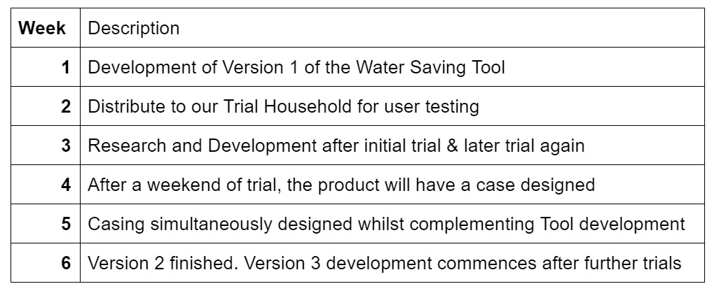
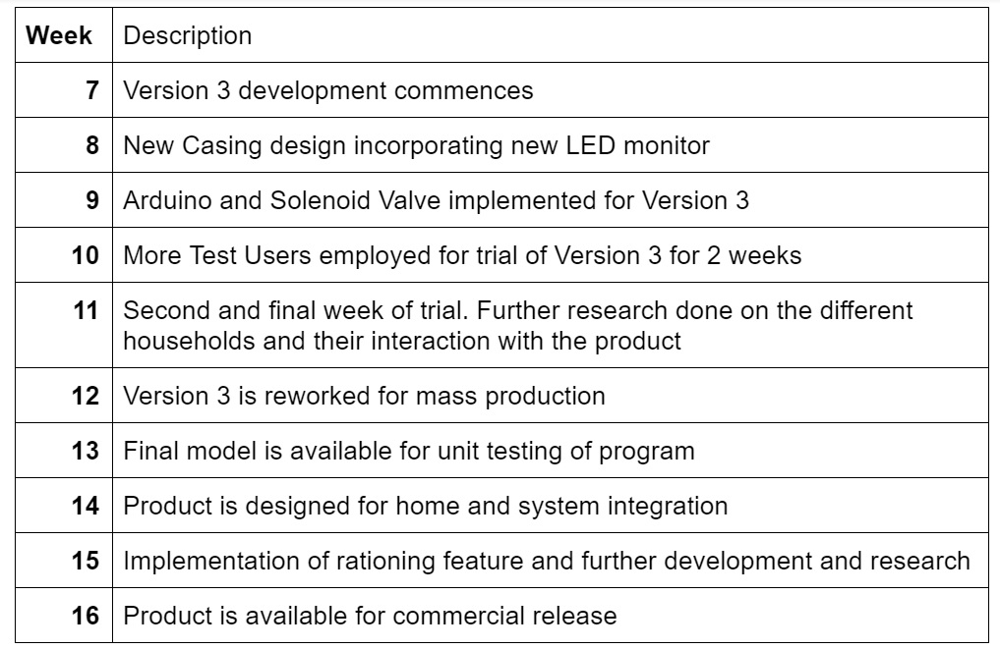

Aims Our aim is to develop a consumer-friendly product that is functional for the household bathroom, we call it an Arduino-based Water Saving Tool that is meant to rival other commercial water saving products. Our product will be cheaper and easier to use than other competitors. Our Goals: Affordable (Cheap for households to purchase) Cost-efficient (will not require large amount of power to run) Effective in reducing water usage Is user friendly and error preventive Does not hinder the user’s livelihood Contingencies and Priorities (Fallback) First, we prioritise the overall design of the electronics for the product, allowing us to experiment with different designs before considering the final model. This will allow us to determine what electronic components we need; since it is Arduino based, we need an Arduino board and the Arduino IDE installed in one of our computers to allow our Electronics Engineer and Programmer to program the Arduino. The “shell” is designed by the Designer after the product proves functional. Since this will be a product used in the bathroom, it needs to be waterproof. Therefore we will apply a layer of plastic coating and hydrophobic coating, which will greatly increase its waterproofing properties. After prioritising the Arduino and the electronics, if we have additional time, we would like to develop an intuitive screen display as an alternative solution to our digital interface, so that the product’s ease-of-use and aesthetic are increased for targeting our audience. If we are unable to meet the deadline before implementing this feature, we’ll adjust the LED indicator underneath the protective casing, and place an opaque screen above the LED indicator to create an aesthetically appealing facade. If any scope creeps or risks occur, we’d have to fallback to affordable and reliable resources, such already made components from a pre-existing product, by ordering the part number identification from a manufacturer or solving the problem with an incredibly cheap but functional iteration of the product. Plans and Progress Most families acknowledge the problem of ‘Drought in Australia’ as well as the possibility of water rationing. But … In 2016 to 2017, 199 gigalitre or 19 trillion litres worth of water wasted. Although the water wasted is the shared amount throughout the whole of Australia. We want to focus on families within Melbourne, to help families lower the amount of water used in a certain amount of time, by simplifying and educating with statistics and brief reports of a family’s water usage. In our progress, we are following Oliver’s design of the project idea, where all the components of the electronics are centred around the Arduino physical programmable circuit board. First we’re to solder the most basic components which are the LEDs, the batteries transistors which act as a timer and the switch to turn the device on or off. These components will be combined without the Arduino, then the electronics will be encased in a small plastic box made air tight with adhesives and hydrophobic coating . After developing the first and basic iteration of the product, we’ll be testing the product with a family consisting of 5 members: 2 Parents, 1 young adult, 1 teen and 1 child. They will be testing the product for a week, before we move on to the second iteration of the device. Roles The passions, interests and skills of your group Project Manager The Project Manager oversees the whole project planning, communicating with stakeholders and acting as a medium for the development team. They address deadlines and milestones during the development of a project. Their contribution in this project for developing a Water Saving Tool is to oversee and manage alongside the expertise of an electronics engineer. Electronics Engineer They will be developing the core elements of the product. Electronics Engineer have control, alongside the project manager, in developing the Water Saving Tool because the product is electronically based. Not only will the Electronics Engineer work with hardware, they will also work with software and will be assisted by a Software Developer. Software Developer Working alongside the Electronics Engineer, the programmer will be developing the software required for the Water Saving Tool to work. They will be programming the built-in software which acts as a Timer, develop the Flow Meter and the electronically controlled Solenoid Valve which inhibits water flow. Since the Arduino electronics controller has its own programming language and Integrated Development Environment they will need to program in that. Therefore a programming language like Java is unnecessary as a development tool in developing this product. Designer The Designer helps translate the technicalities of the product to the user. They design the product based on the Electronics Engineer’s design, complementing the internals of the Water Saving Tool as they design the 3D printed shell of the product, making it waterproof and interactable for the user. Sales Support Officer In order for the product to be marketable, we need someone in Sales to help sell the product to our target demographic. They will also work with the Website Development team, so that the products and accounts are managed through the internet for ease-of-access and ease-of-use. IT Consultant IT Consultant will work with the Website Manager and Developer to develop a website for the Sales Support Office and for marketing purposes. The Information Security expert will help alongside the Website Manager and IT Consultant to secure the website from outside threats. IT Consultant also advises the best methods and practices in Information Technology for companies, and can complement the Project Manager’s communication skills. Scope and limits: The Project is Limited in: Budget: The cost of developing this product totals to less than a couple hundred dollars to produce test iterations of the product. To lessen budget costs, we have to reuse our previously bought electronics and components. Target Demographic: Our target demographic are Australian families and households. Although we are limited to produce the product for families within Melbourne. We are limited in resources to enable sales across the country. Trials and Testing: For our initial test users, they’ll be trialing our product week after week. We could develop multiple versions of the same product and trial them with other families from different backgrounds and environments, but doing so will create scope creeps during our initial design and implementation of the product. Scope: Deliverable>: Water Saving Tool The Cost of the Product, and the desirability of the product, are evident in our first iteration of the device and how the initial test users have interacted with it. We have also acknowledged that in order for the project to not have scope creeps, we’ve decided to approach the project in the ‘Waterfall’ methodology, in which we create versions of the product through steps, while eliminating possible scope creeps. Tools and Technologies We will be needing an Arduino motherboard to act as the controller for all the electronics which runs the product. The Arduino will be programmed in its provided Arduino IDE which is a C/C++ based language, allowing us to program the Arduino, controlling the electronics’ Timer, the Solenoid Valve and the delays needed to act as a killswitch for the Start Button. Arduino electronics board Arduino IDE Solenoid Valve Electronics Components: Light-emitting diodes, Batteries, Transformer; etc. Oliver has great knowledge behind electronics and programming, and Jason is the most fluent in programming out of all of us. If necessary, use of open-source software are available on GitHub. These open-source projects are free for use and contribution, and can help minimize the amount of work required to develop the product. Testing To test the Arduino-based Water Saving Tool, we will be testing different iterations of the product within the 16 weeks of development, We plan to finish our first working version within five to six weeks. In Week 1: Before implementing the Arduino motherboard into the overall design, we will first work with a basic circuitry which consists of the battery, LED and a timer. The timer will have a delay of 3000 milliseconds, which should be enough time for a quick shower. During the testing we will be conducting a series of checks of how we as a team will interact with this product. Finally we will then build up the design to match our Electronics Engineer’s overall design, implementing new components after each test proves satisfactory. In Week 2: The Arduino will be implemented into the design as the core mechanic of the product. It will be programmed to replace the timer component from the previous iteration. Our Programmer and Electronics Engineer will match this iteration to the final design and test for inconsistencies or possible scope-creeps. During the implementation of the core feature, our Designer will be designing a simple yet waterproof and air-tight sealed casing to house the electronics in. Once the Arduino board is implemented and and the waterproof casing proves satisfactory, we will begin initial testing with real users. Five users will represent the general family household. 2 adults, a teenager, a child and a young adult. Our five volunteers will use the product for a week. (Testing will be done during Week 3) In Week 4: Implementation of the basic LED display will be incorporated in the overall design. We want to use three different colours of LEDs: Red, yellow and green. This basic LED display will act like a traffic light. Green for “Good”, Yellow for “Nearing Time” and Red for “Stop”. The weeks 1 to 3 will be repeated until the 6th week in which we will have a re-designed product with the electronics complying with quality assurance as well as the casing of the product complementing our Electronics Engineer’s design. Timeframe All members in the team have 40 hours of work time within a given week. This limits the amount of time we have in order to develop a fully functional product due to the fact we only have 6 weeks to tackle this project. We already have the initial design of the product ready, from the electronics to the 3D printed casing. For the next 10 weeks after the sixth week of this project. We’ll be further developing the product by doing unit tests and employing more households from various environments to test different versions of the trial product until the final model which will be distributed for 2 weeks amongst our test users in order to have a research data to apply in our commercial iteration.   Risks Bathroom purpose-based products are always exposed to water, may it be moisture, user-error or unlikely events which are beyond our scope. The product may work with a power-socket, but a power outage may occur, to combat this, the internal battery reserves electrical energy and can be used if not plugged into a power supply. As for user-errors, with one of our testers being a child, they may tamper with the product by either damaging it intentionally or unintentionally. And since the product is designed for everyday use and is for everyone, we’ll mitigate the possible damages to the product by developing a stronger case, which houses the electronics away from the walls of the casing but also allow for the shell to crumple to divide the amount of energy from destructive forces, moving the energy around the casing preventing internal damage. We may also come across risks in the lab, or during development. Computers may not work or are incompatible with needed software. Power outages may occur with desktop computers, and therefore loss of work is possible. There is also the possibility of theft or malicious intent, in which the product may disappear unknowingly or damaged. Group processes and communication Our team is currently utilising the services of Microsoft teams in our personal devices. After a Wednesday group meeting, we communicate throughout the day through weekly announcements, detailing the steps needed to be done and listing out inconsistencies within the project. Sometimes direct messaging is done in order to privately monitor and correct possible scope creeps or help in detailing improvements. If we are unable to contact a member through Microsoft Teams, we contact them through company email. We disregarded in employing Facebook Messenger for communication because it does not translate professionalism in the team.